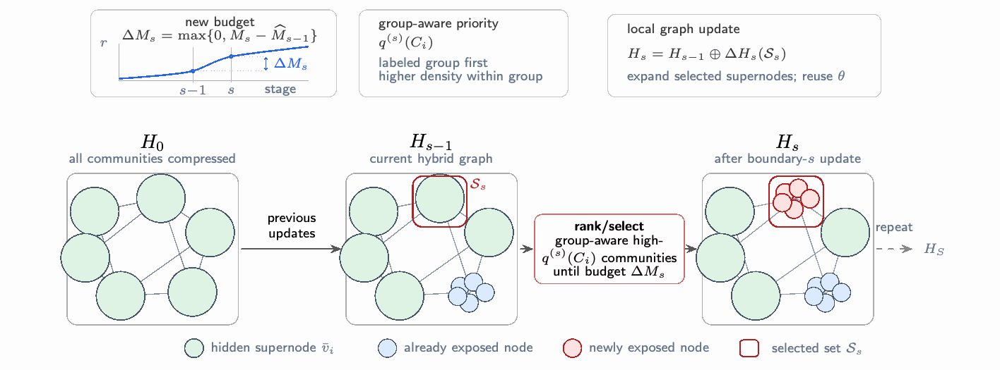

PACE-GNN: Cost-Aware Progressive Graph Granularity Scheduling for Faster Convergence in GNN Training
Start with an inexpensive community graph, then selectively recover finer detail as training progresses. A cost-aware schedule and asynchronous graph refinement accelerate convergence while preserving final quality.
Up to 3.60× faster than full-graph training; 6.35× faster than neighbor sampling.